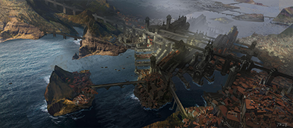
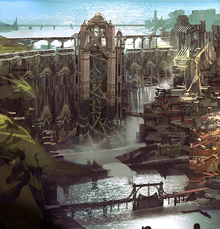
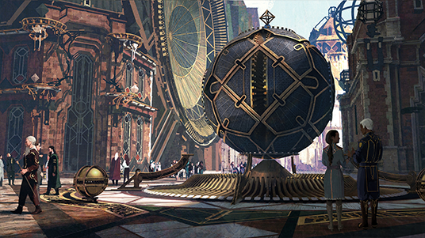
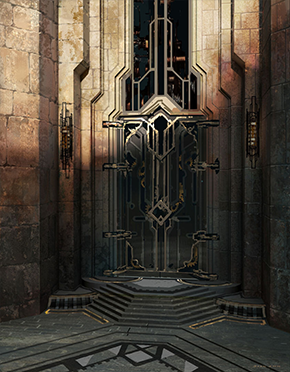
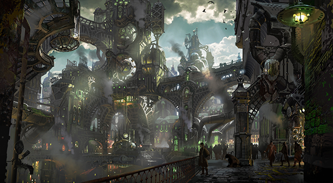
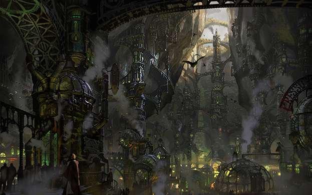
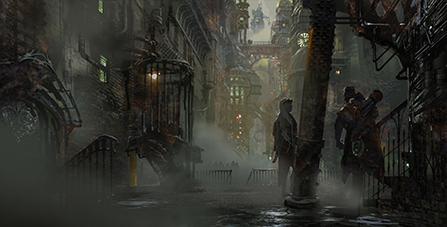

story
Filt over
Filtover is a city overlooking the sea, prospering in a progressive atmosphere.
-

The ancient city of Zaun used to be a trading post in northern Shurima, but it became more prosperous three thousand years later with the construction of a floodgate at Piltover.
-

With the construction of the Isumun Filtover became a commercial and trade center between Valoran and Shurima bringing immense wealth to the city's rulers.
-

"Runeterra Unknown" by Zindello
-

wealth and status The entrance to the commercial building is surprisingly sophisticated.
ZAUN
Zaun is a huge underground city nestled beneath the deep valleys and valleys that run through Filtover.
-

A booming border market on the border between Filtover and Zaun
-

The lively streets of Zaun
-

Backstreet Hextech Deals
PLOT
-
- PLOT 1
- When the children return to the underground city, Powder loses the things they stole during an argument with Decard's gang. Vander, the owner of a bar and leader of the underground city force “Raines,” rebukes the carelessness of the messed up children, and tries to settle the matter with Sheriff Grayson, who is investigating the case. Vi reassures his younger brother by scolding Milo, who denounces Powder as a "jinx" that always ruins things. At that time, Silco learns the truth of the incident from Decard in the lowest floor of the underground city and tests a new mutant substance named 'Simer' on mice. Then he tries to experiment on humans...
-
- PLOT 2
- A revolt breaks out in Zaun, oppressed by Piltover. Executors ruthlessly suppress the advancing militia. Amid the wreckage of violence, Bai and Powder are orphaned, and a failed rebel leader, Vander, takes responsibility and bears two sisters. Years later, Bai and Powder make a living by shoplifting with their adopted brothers, Milo and Clegger. Children stealing a luxurious penthouse in Piltover after receiving a tip from their friend Echo. When the owner of the penthouse returns, he hurriedly runs away, but Powder, who was stealing a magic crystal set, accidentally drops one. An explosion breaks out part of the building, and the children manage to escape with the stolen items, including hextech crystals, in pursuit of the enforcers.